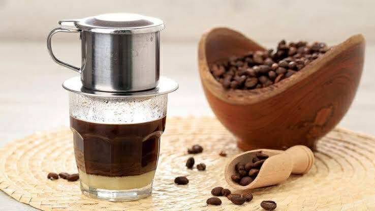

ダクラクコーヒー
高原の気候で育ったダクラクコーヒーは、深い苦味と濃厚なコクが特徴です。ベトナム式ドリップ「フィン」で抽出し、練乳と合わせたカフェ・スア・ダーは絶品。香り高い味わいは世界の愛好家にも評価されています。
高原の気候で育ったダクラクコーヒーは、深い苦味と濃厚なコクが特徴です。ベトナム式ドリップ「フィン」で抽出し、練乳と合わせたカフェ・スア・ダーは絶品。香り高い味わいは世界の愛好家にも評価されています。
小山岳地域の伝統スープは野菜、ハーブ、肉や魚を煮込んだ素朴で栄養豊富な料理です。自然素材の風味が活き、身体が温まります。民族祭りや家族の集まりで振る舞われる家庭の味として親しまれています。
竹筒に米を入れて蒸し上げる香ばしい竹包みご飯と、炭火焼きの肉は人気の郷土料理です。竹の香りがご飯に染み込み、素朴ながら深い味わいが楽しめます。アウトドア料理として観光客にも好評です。
発酵魚ソースを使った料理は少数民族に伝わる伝統の味です。独特の香りと旨味が食欲をそそり、野菜や肉と相性抜群。発酵文化が息づく地域の食文化を象徴しています。
豊かな自然が育む南国フルーツは甘くジューシーで、天然蜂蜜との組み合わせは贅沢な味わいです。健康食品としても人気で、お土産にも喜ばれます。